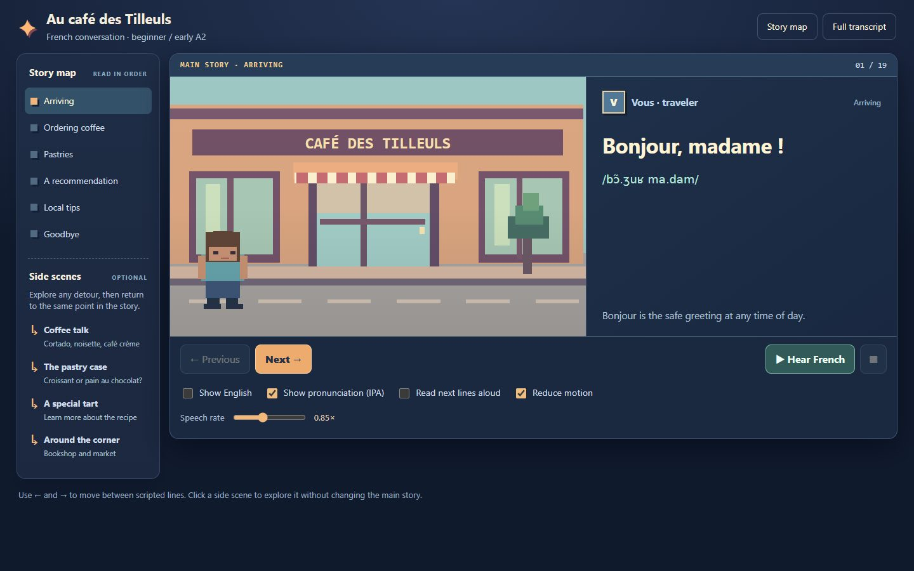
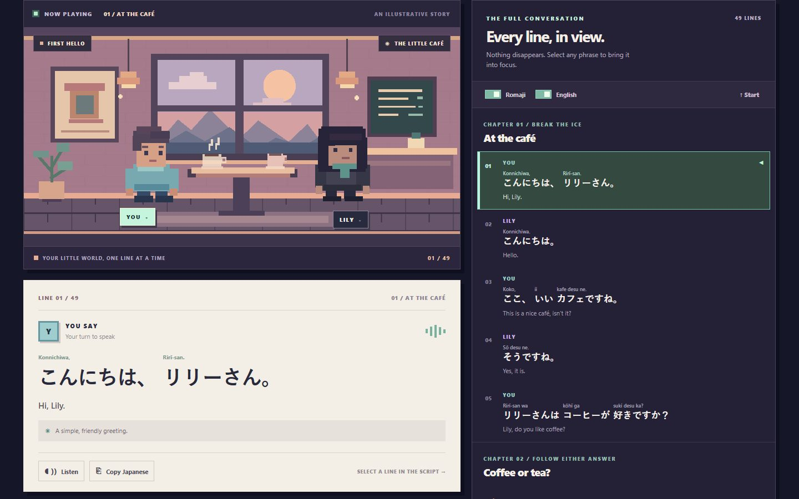
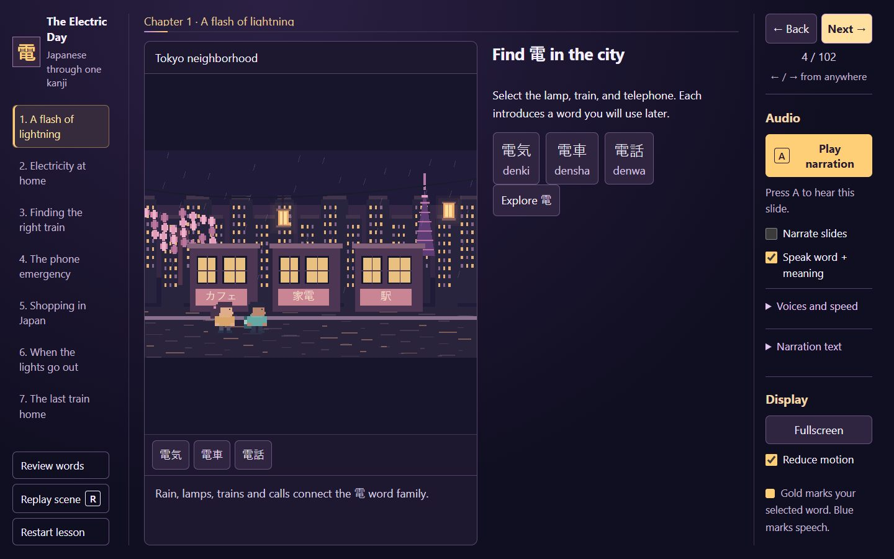
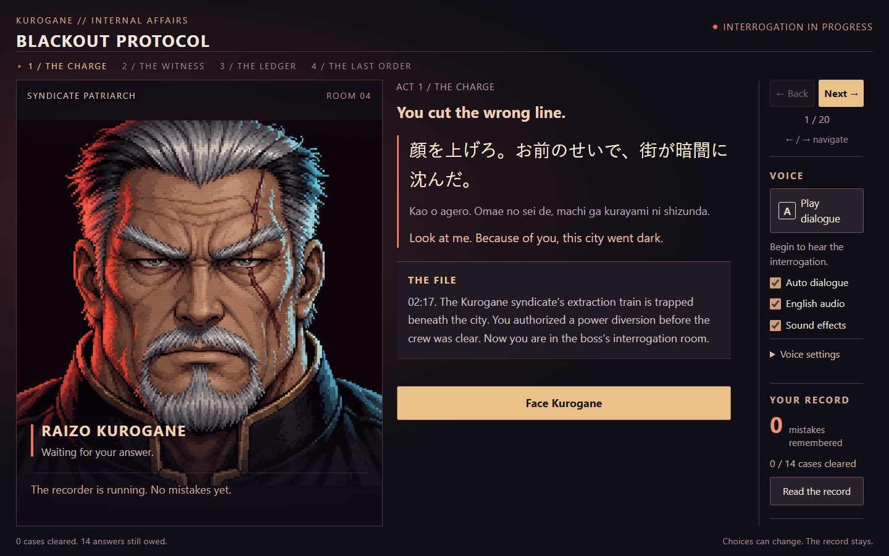
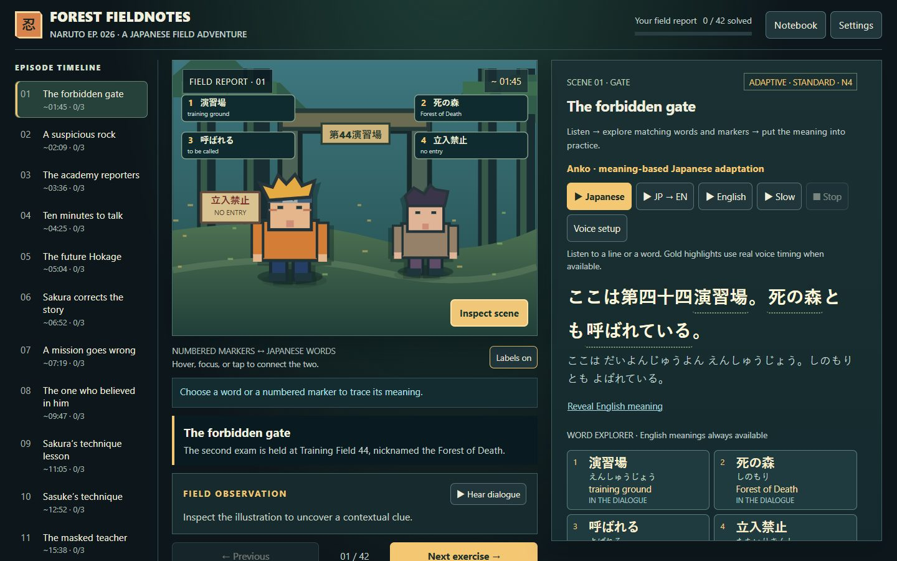
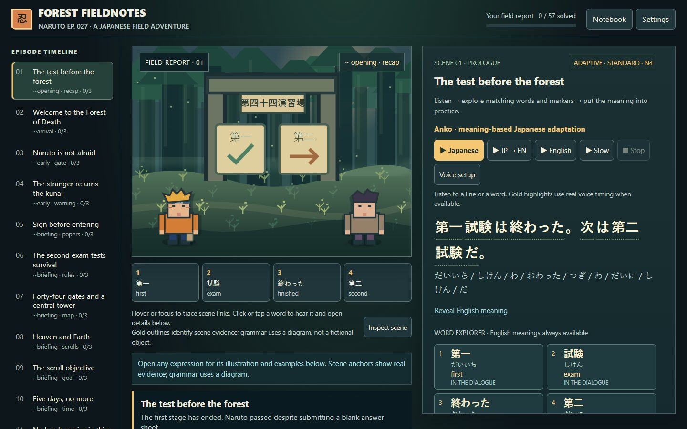

French & Japanese learning demos
Six single-file HTML references for dialogue, vocabulary, and browser speech.
-

French / conversation
At the cafe
Coffee orders, pastries, and directions, with IPA, English translations, and four optional conversations.
Web Speech / SVG / 35 lines
-

Japanese / conversation
Coffee with Lily
Small talk, preferences, and asking for repetition, with romaji, two coffee paths, and a persistent transcript.
Web Speech / SVG / 49 lines
-

Japanese / kanji
The Electric Day
The 電 word family in trains, charging, and household objects, with linked scene words and spoken explanations.
Web Speech / SVG / 102 slides
-

Japanese / kanji
Blackout Protocol
Choose 電 vocabulary in 14 interrogation cases; earlier mistakes affect later dialogue and remain in the answer record.
Web Speech / Web Audio / session ledger
-

Japanese / Naruto episode 26
Forest Fieldnotes 26
Exam preparation, introductions, and teamwork through scene-linked vocabulary, listening, and sentence-building tasks.
Web Speech + Web Audio / 42 tasks
-

Japanese / Naruto episode 27
Forest Fieldnotes 27
Forest survival vocabulary with inline illustrated definitions, kanji notes, simple usage examples, and scene highlights.
Web Speech + Web Audio / 57 tasks
Learning resources
French
Courses and references
- Language Transfer
- Free beginner audio course with guided questions and explanations.
- TV5MONDE - Apprendre
- Free video-comprehension exercises organized by level.
- Lawless French
- Free grammar, pronunciation, and proficiency-level lessons.
- RFI - Francais facile
- News-based listening with transcripts and exercises.
- InnerFrench
- Intermediate listening. Free-account transcript access was reported by the collections, not independently confirmed.
- Tex's French Grammar
- University grammar reference with examples and exercises.
GitHub collections
- gbroques/awesome-french
- Pronunciation, videos, podcasts, grammar, and courses across learner levels.
- WonderfulClaire/awesome-french
- Beginner path through pronunciation, grammar, phrases, and immersion. Explanations are in Chinese.
- oaleffemanuel/biblioth-que-fran-aise
- Reading materials from beginner texts to literary classics.
- biomathcode/Awesome-learn-French
- YouTube recommendations; several sections are empty. Authorization of linked textbook copies was not checked.
Japanese
Courses and references
- Tofugu: Hiragana and Katakana
- Public English-language kana lessons with mnemonics and exercises. Start with hiragana, then katakana.
- Tae Kim's Grammar Guide
- Free grammar explanations in English, from basic sentence patterns onward. Print editions and store apps are separate products.
- Kanji Alive
- Public kanji reference with stroke-order animations and example-word audio; no payment gate was encountered in the source checks.
- WaniKani
- Kanji and vocabulary course with mnemonics and spaced repetition. Starter levels are free; continued progression is paid.
- Jisho
- Public Japanese-English dictionary for words, kanji, and example sentences. A lookup tool, not a course.
- Tadoku Free Books
- Graded illustrated reading with furigana and audio for selected titles. Free and commercial books are separate; availability varies.
- NHK WORLD-JAPAN Learn Japanese
- English-friendly Easy Japanese lessons and listening. The complete catalog and access in every region were not confirmed.
- Nihongo con Teppei
- Beginner listening once basic vocabulary is familiar. Individual episode access and paid extras were not fully checked.
GitHub collections
- yudataguy/awesome-japanese
- English-language guides, kana, kanji, grammar, reading, listening, and tools. Some entries label level, cost, or regional restrictions.
- donkuri/japanese-resources
- Technical, self-directed immersion resources, dictionaries, and spaced repetition. Community decks may have content or redistribution caveats.
- anandsthajp/japanese-learning-resources
- English-language courses, kana, kanji, grammar, reading, listening, and JLPT preparation. Includes commercial apps and third-party decks; cost labels vary.
NHK Easy News is not the Easy Japanese course. The older news URL redirected to an NHK ONE terms-confirmation page in the source checks; unrestricted article access was not confirmed.
Access notes are dated November 1, 2026. Links, prices, and regional availability may change; checks covered selected pages, not every feature or download. Prefer official learning materials over unofficial textbook copies or decks.